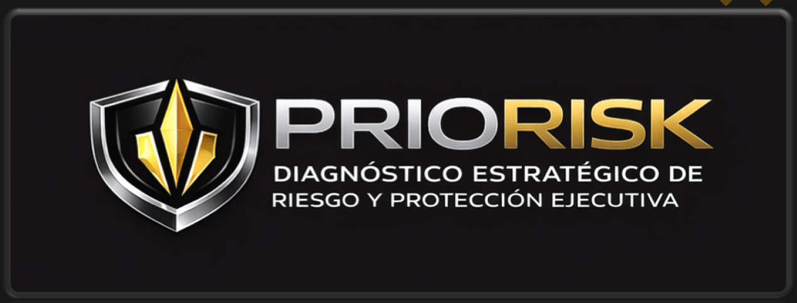

"Antes de proteger, hay que entender el riesgo."
Servicios de protección ejecutiva para organizaciones industriales y corporativas. Metodología basada en inteligencia predictiva, análisis de amenazas y gestión proactiva de riesgos operacionales.
La protección ejecutiva moderna trasciende la seguridad física reactiva. Nuestro enfoque integra inteligencia estratégica, análisis geopolítico, evaluación de amenazas digitales y físicas, y protocolos de mitigación adaptados a entornos industriales de alta complejidad.
En PRIORISK Consulting Group, somos una firma especializada en análisis estratégico de riesgo físico y protección ejecutiva, con presencia en Colombia. Trabajamos con directivos, personal clave y equipos operacionales en sectores donde la continuidad del negocio depende de la integridad de sus líderes: energía, infraestructura crítica, manufactura avanzada, logística internacional y corporativos con exposición a riesgos geopolíticos.
Nuestro enfoque no es vender seguridad, sino comprender el riesgo real de cada cliente antes de proponer cualquier medida de protección. Trabajamos bajo confidencialidad absoluta, con criterio técnico y visión estratégica, dirigidos exclusivamente a ejecutivos de alto nivel, familias empresarias y líderes expuestos.
La mayoría de las decisiones de seguridad se toman sin un análisis previo del riesgo real.
Recursos destinados a medidas ineficaces o sobredimensionadas.
Las decisiones se toman después del incidente, no antes.
Empresas que venden soluciones sin diagnosticar el problema real.
En PRIORISK no vendemos soluciones predefinidas. Realizamos un análisis estratégico del riesgo físico al que está expuesto el ejecutivo, su familia o su organización.
Identificación de amenazas concretas basadas en inteligencia de fuentes abiertas (OSINT) y análisis contextual.
Evaluación de puntos débiles en rutinas, desplazamientos y espacios físicos habituales.
Análisis del impacto que tendría la materialización del riesgo sobre la persona protegida.
Evaluación técnica de la probabilidad real de que las amenazas identificadas se concreten.
Solo después de entender el riesgo, recomendamos las medidas de protección apropiadas.
Nuestro proceso de análisis sigue cuatro fases consecutivas y técnicamente rigurosas:
Definimos qué o quién debe ser protegido y por qué. Evaluación exhaustiva de factores de riesgo: movimientos geopolíticos, contexto sectorial, exposición pública del ejecutivo, historial de incidentes, vulnerabilidades digitales y físicas. Inteligencia de fuentes abiertas (OSINT) y análisis predictivo.
Evaluamos escenarios de riesgo basados en datos y contexto real. Desarrollo de planes de protección adaptados al perfil del ejecutivo, rutinas operacionales, entornos de trabajo y niveles de exposición. Incluye: rutas seguras, protocolos de desplazamiento, seguridad en eventos, gestión de comunicaciones sensibles.
Clasificamos riesgos según probabilidad e impacto potencial. Despliegue de medidas preventivas, capacitación de equipos internos, coordinación con HSE corporativo y monitoreo activo de variables de riesgo. Revisión trimestral y actualización de protocolos según evolución del contexto.
Proponemos medidas técnicas, organizacionales y operativas. Protocolos de actuación ante escenarios críticos: amenazas identificadas, secuestro virtual, extorsión, incidentes físicos. Coordinación con autoridades, equipos legales y crisis management.
Análisis integral del perfil de riesgo de altos ejecutivos basado en inteligencia estratégica y evaluación multidimensional.
Evaluación rápida para decisiones urgentes o preliminares. Ideal cuando se requiere una valoración inmediata del contexto de riesgo.
Auditoría de seguridad física en viviendas y propiedades. Análisis de vulnerabilidades arquitectónicas y perimetrales.
Estudio de trayectos habituales y puntos críticos de exposición durante desplazamientos rutinarios o excepcionales.
Propuesta de esquemas personalizados de protección personal adaptados al nivel de riesgo y contexto operativo del ejecutivo.
Asesoría continua en gestión de riesgo y toma de decisiones. Monitoreo permanente de variables críticas y actualización de protocolos.
Nuestros clientes reciben documentación profesional, técnica y aplicable
Nuestros servicios se integran con las estructuras de Health, Safety & Environment (HSE), departamentos de seguridad corporativa, risk management y continuidad del negocio.
Conocimiento profundo de operaciones en sectores regulados, ambientes hostiles y contextos geopolíticos desafiantes.
Analistas de inteligencia, expertos en seguridad corporativa, especialistas en análisis geopolítico y profesionales con experiencia en fuerzas de seguridad estatales.
Protección efectiva sin afectar la operativa diaria ni la imagen corporativa del ejecutivo o la organización.
Acceso a fuentes de información globales y análisis de contextos regionales para operaciones internacionales.
PRIORISK trabaja exclusivamente con profesionales y organizaciones de alto nivel:
Directores ejecutivos y miembros de junta directiva con exposición pública y responsabilidad estratégica.
Grupos familiares con participación en corporativos de alto perfil y visibilidad mediática.
Gerentes de operaciones críticas, directores de proyectos de infraestructura y líderes de unidades de negocio clave.
Abogados, médicos, consultores y expertos con riesgo reputacional o exposición pública.
Funcionarios de alto nivel en entidades multilaterales, gubernamentales o de regulación sectorial.
Individuos con riesgo reputacional, físico o estratégico derivado de su actividad profesional o posición pública.
No trabajamos con el público general ni con clientes que busquen soluciones masivas.
La protección tradicional es reactiva y centrada en escolta física. Nuestro enfoque es preventivo, basado en análisis de inteligencia, identificación anticipada de amenazas y mitigación de riesgos antes de que se materialicen. Analizamos el contexto completo: amenazas del entorno, vulnerabilidades operacionales y probabilidad de materialización.
Empresas industriales con operaciones en zonas de riesgo, corporativos con alta exposición pública, sectores regulados (energía, infraestructura), organizaciones con presencia internacional y compañías en procesos de M&A o restructuración. También profesionales independientes de alto perfil con riesgo reputacional o físico.
Trabajamos en coordinación con su departamento HSE, alineando protocolos de protección ejecutiva con sus matrices de riesgo, planes de emergencia y sistemas de reporte corporativo. Nuestra metodología es compatible con estándares ISO 31000 y se integra en sistemas de Business Continuity Planning (BCP).
Perfil de los ejecutivos a proteger, contexto operacional, geografías de trabajo, incidentes previos (si los hay), estructura de seguridad actual y nivel de exposición pública. Toda la información se maneja bajo estricta confidencialidad.
Ambos. Ofrecemos protección continua para equipos directivos, y también servicios específicos para eventos, desplazamientos internacionales o proyectos en zonas de riesgo. La modalidad se define según las necesidades estratégicas del cliente.
Reunión confidencial con responsables de seguridad, HSE o dirección para comprender el contexto operacional y los objetivos de protección.
Perfilado de amenazas basado en OSINT, análisis del entorno geopolítico y evaluación inicial de vulnerabilidades.
Documento ejecutivo con alcance, metodología, recursos necesarios, cronograma y estructura de costos.
Despliegue de protocolos de protección y capacitación de equipos internos para asegurar la adopción efectiva.
Seguimiento activo de variables de riesgo y reportes periódicos a dirección con recomendaciones de ajuste.
En PRIORISK analizamos amenazas, vulnerabilidades e impacto para diseñar estrategias de protección ajustadas a cada nivel de exposición.
Todas las consultas son manejadas bajo estricta confidencialidad